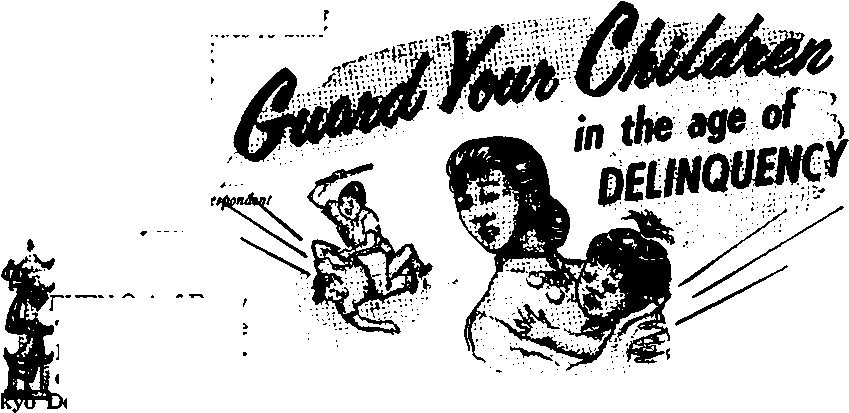
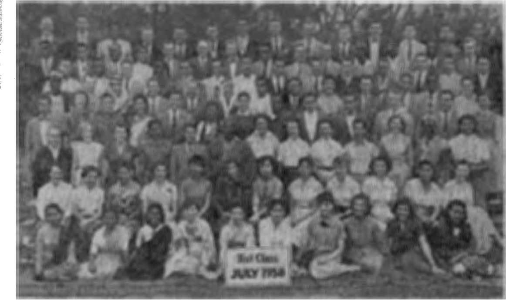

one on
ard Your Children in the Age of Delinquency
PAGE 5
Rance’s “Legal” Coup d’Etat
4he Divine Will International Assembly of Jehovah’s Witnesses ®
PAGE 13
United States of Africa
THE MISSION OF THIS JOURNAL
News source* that are able to keep you awake to the vital Issue* of our times must be unfettered by censorship and selfish interests. "Awake!" has no fetters. It recognizes facts, faces facts, is free to publish fact*. It Is not bound by political ambition* or obligations; it is unhampered by advertiser* whose toes must not be trodden on; it is unpre|udlced by traditional creed*. This journal keep* itself free that it may speak freely to you. But it does not abuse its freedom. It maintains integrity to truth.
“AwakeI” use* the regular new* channels, but is not dependent on them, its own correspondent* ore on all continents, in scares of nations. From the four corners of the earth their uncensored, on-the-scenes reports come to you through these columns. This journal's viewpoint is not narrow, but is international. It is read in many nations, in many languages, by persons of all oges. Through its pages many fields of knowledge pass In review—government, commerce, religion, history, geography, science, social conditions, natural wonders—why, its coverage is as broad as the earth and os high os the heavens.
"Awake!" pledges itself to righteous principles, to exposing hidden foes and subtle dangers, to championing freedom for oil, to comforting mourners and strengthening those disheartened by the failures of a delinquent world, reflecting sure hope for the establishment of a righteous New World.
Get acquainted with "Awake!" Keep awake by reading "Awake!"
■ IM W H ■
PUBUSHBD SHMIMONTHLT EY
WATCHTOWER BIBLE AND TRACT SOCIETY OF NEW YORK, INC 117 Adams Street Brooklyn 1, N.Y.f U.S.A.
N. H. Knobs, Grant Suiter, Secretary
Printing this Issue: 2,800,000
Five cents a copy
“Awake!’1 It punished In the follwFnt 19 hnguagii: Semimonthly—Afrikaans, Danish, Dutch, English, Finnish, French, German, Greek, Italian, Japanese, NorweKlan, Portuguese, Spanish, Swedish, Tagalog.
Monthly—Cinyanja, Indonesian, Ukrainian, Zulu.
Yearly subscription rates Officii Tor nemimmthly editions
America, U.S., 117 Adams St, Brooklyn 1, N.Y. SI Antral la, 11 Bereirnnl Rd., strath field, N 8.W.
Canaria. 150 Bridgeland Are., Toronto Ont 51 England, 34 Craven Terrace, London W. 2
New Zealand, 621 New North Rd., Auckland B.W. 1
South Africa, Private Bag, ElamMcratain, Tri. 7/-Monthly editions coat half Uic above rata.
ReiHttanea* tor •ubscripUcma should bo sent to the oflta in your country. Otherwise send yuur remittance to Brooklyn. Notice of captation la sent at least two issues before subscription exjdm.
CHANGES OF ADDRESS rtoild roach » thirty days before yoer moving data. Ghl is yor aid and new iddrets (if poulkle, ycir eld arfireu latel>, Write Watohtrnr, 117 Adama Street, Brooklyn 1, New York. U.S.A.
Knteral « second'C-Uuta matter at Brooklyn, N. T. Printed In U.S.A.
The Bible translation ised in "Awake!” If the New Werl! Trimlrtlen ef the Hniy Stfirfi'M. When other tranilatlM, ire lied the followlnl ejmhoti wilt irdht behind th, cltltloni:
AS — American 8 Laniard Version AT — An American Translation AV ” Authorised Version (J611) Da — j, N. Darby's veralon
Dy *- C&thullc Dmiay teralon £D — Ite Emphatic Dlaglotl JP - Jewish Publication Soc. Le — Isaac Letter's Terrion
2tfO - James Moffatt's version
— J. B. Rotherham'n version
— Revised Standard Version yp - Robert Young’s version
CONTENTS
The Demagogue Has an Ax to Grind! 3 Guard Your Children in the
The Divine Will International Assembly
World Traveler Looks at Marriage
“Your Word Is Truth”
Why a Thousand for Solomon and
Jehovah’s Witnesses Preach in
truant from school, as
little boys are sometimes wont to do. In his
wandering he met a man who needed help to grind an ax. This man flattered the little fellow so much that he gladly turned the grindstone while the man sharpened his ax. Turning that grindstone got very wearying and the lad got blisters on his hands; but because of the flattery he had received he continued turning the wheel until the ax had been fully sharpened. And then what did the little chap get for his pains? A stern rebuke for being a truant and a warning to be off to school! Ever since, the expression “having an ax to grind” has meant “having a secret or selfish purpose to serve.”
The demagogue is a politician with an ax to grind. It may be wealth, or power, or a messianic complex; but, whatever its nature, it is selfish. The word “demagogue” comes from two Greek roots meaning “people” and “leading.” Originally it had a favorable connotation, but today it has an invidious or repugnant one, being used to denote “one skilled in arousing the prejudices and passions of the populace by rhetoric, sensational charges, specious arguments, catchwords, cajolery, etc.; especially, a political speaker or leader who seeks thus to make capital of social discontent and incite the populace, usually in the name of some popular cause, in order to gain political influence or office.”—Webster’s New International Dictionary, Unabridged.
The demagogue understands human nature, but had no inborn or instinctive love of people. Like the man with the ax to grind, he considers them merely as tools or dupes whom he can use to serve his ends. His success highlights one of the greatest weaknesses of democracy, the fact that the majority that rules is easily swayed by appeals to passions, prejudices or love of selfish gain. Flattery, implied or expressed, is one of his most effective weapons. However, the people themselves must share the blame with the demagogue in that they allow selfishness to rob them of perspective. A demagogue is a leader of the people—leading them around by the nose—with their consent!
Some four centuries ago there lived an Italian politician by the name of Machia-veil!* He brazenly advocated the policy of deliberately making all morality subservient to political ends. The book in which he enunciated this philosopy, Il Principe (“The Prince”), might well be termed the Bible of demagogues.
Demagogues there had been, however, long before Machiavelli’s time. In fact, one of King David’s sons, Absalom, was one. Concerning him the Bible states that he stood by the gate when people came to his father the king with grievances and ‘kept stealing the hearts of the people’ by such expressions as: “Oh that I were appointed judge in the land, that to me every man might come that happens to have a legal case or judgment! Then I should certainly do justice to him.” Absalom’s making insurrection against his father King David and his defiling of his father’s concubines bear eloquent testimony to his ambition and lack of principle.—2 Sam. 15: 1-6.
And when we come to think of it, did not Satan start out as a demagogue? Did he not invent a grievance for Eve and then play on her passions for his own selfish purposes, to have others worship him and to show himself equal, if not superior, to his Creator? He most surely did, as the Scriptural record at Genesis, chapter three, Job, chapters one and two, Ezekiel, chapter twenty-eight, and Matthew, chapter four, all so clearly show.
Coming to modern times, there was Adolf Hitler, perhaps the greatest demagogue of all human history. He “showed his political gift by his correct appraisal of the masses whose passions and fears he raised to a fever pitch by his oratory against democracy, the Jews and foreign powers.” About the same time in the United States there was one Huey P. Long, a greedy politician who made “himself a Presidential possibility with his Share-the-Wealth platform promising $5,000 to every family,” and limiting the incomes of the rich. Still more recently there was the demagogue Joseph R. McCarthy. In his lust for power he irreparably harmed countless innocent persons. He played on the people’s fear of communism and vaunted his Catholicism—“seldom misses Sunday mass.”
At the present time there also are demagogues. They can be seen in almost every democracy. In the United States they include those whose only qualification is their Mormon or Catholic religion, a union card or their stand on the race issue: in the South, for segregation; in the North, for integration. Typical is one Adam Powell, Negro representative to Congress from New York’s Harlem section and Baptist clergyman. He is so rabid that even the National Association for the Advancement of Colored People has branded him as a racist. At present he is facing an indictment for tax evasion. Three of his secretaries have previously been indicted on various charges. As for his representing his constituents in Congress, Newsweek, June 2, 1958, states: “He has the worst record of absenteeism of any member of the house. . . . But he never lets slip an opportunity to assail discrimination against the Negro." As long as the race issue outweighs every other one, just so long will demagogue Powell represent Harlem in Congress, on the rare occasions that he is present.
So long as democracies remain, demagogues will come and go. Someday, however, there will come a better form of government for the peoples of earth, one under the direct supervision of Jehovah God, a theocracy. There will be no demagogues then, but until that time let all men of good will beware of the flattering demagogues who exploit grievances and appeal to passions and prejudices, because the demagogue has an ax to grind!
THE SPACE AGE BRINGS WITH IT NOT ONLY FEARS OF NUCLEAR HOLOCAUSTS AND RACE ANNIHILATION; IT ALSO BRINGS TO MANY FEARS AS TO THE FUTURE OF THEIR CHILDREN. YET CHILDREN MAY BE TRAINED FOB A BRIGHT AND WONDERFUL FUTURE.
By -‘AHAKE!" com in JAPAN
warned newsreporters: “Don’t ever wan-
elinquents Rounded Up by Police,
EVEN Out of Every Thousand Are Found to Be Delinquents,” “820 To-
“Teen-Agers Stage Sex Orgies,” “2 Boys, 5 and 6, Kill Eight-Month-Old Girl.” So ran some of the headlines in Tokyo newspapers. Once upon a time, crime used to be the exclusive field of adults, but now youth bids fair to outdo the most hardened of old-time criminals.
So serious has the situation become that reformatories for youthful delinquents are packed full. As reported by the Asahi Shimbun on April 18,1958, the Tokyo Medical Reformatory is crowded beyond capacity and hence it is easy to break out. The institution had just experienced its fourth breakout since January.
On one night alone Tokyo police rounded up 820 minors on charges ranging from loitering to theft and immoral conduct. More than half were high school students, and they included twenty-eight girls. The police committed thirteen minors whom they considered incorrigibles to juvenile consultation centers and sent the rest home after a reprimand and lecture.
Each summer the Shonan beaches become more notorious for the lawless packs of teen-agers that gamble and riot through the night and pick fights with bathers by day. The local superintendent of police der away from your escorting police officers. Anything could happen to you. No policeman ever patrols that area alone.”
With some, delinquency seems to start at a tender age. Take, for example, the two boys aged five and six of Kaseda City, Kagoshima prefecture, who lashed an eightmonth-old girl with a rope and dragged her to her death in a lonely ditch. The boys told the police it was all a prank.
Investigating the sharp rise in juvenile delinquency, Tokyo’s Metropolitan Education Board found that roughly 0.7 percent of school children between the ages of thirteen and fifteen are delinquent. The board blamed poor family environment for about one third of the cases, association with other delinquents for one quarter of the cases, and low IQ or physical defects for the remainder. Of 3,443 problem children, 2,640 were boys and 803 were girls. The board said there was no apparent connection between delinquency and the family’s wealth or poverty.
Judge Shinichiro Sato, deputy chief of the Tokyo Domestic Relations Court, has charged the increase in juvenile crime to the turbulent times in which present teenagers spent their childhood. He says that Japan’s defeat in the last war completely shattered the foundation of loyalties of the old Japan. The judge believes that one very serious weakness is the lack of a religious background. He cites Western democracy as having Christianity as its basis, whereas in Japan Buddhism has long lost its moral influence on the people, confining its function to funeral rites. Shintoism, he says, is too busy trying to regain the prestige it lost after the war, and its contact with the people is restricted to wedding ceremonies.
However, lands that claim Christianity as their religion are striving desperately with the same problem. London, a headquarters of Protestantism, can no longer claim the distinction of being the world’s most law-abiding city. In 1957 London reported a 14-percent increase in crime, and one quarter of those arrested were under twenty-one years of age. Religion is said to be reviving in New York city. And so is juvenile crime. New York’s 23,000-man police force has been ordered to wage all-out war on juvenile gangs, numbering at least 8,000 members.
A Chicago father, lamenting the murder of his six-year-old daughter, blamed the society that produced the murderer, rather than the murderer. Indeed, the society of so-called “Christian” countries appears to be as inadequate as that of Buddhist countries in meeting the threat of delinquency. There is something wrong with society world-wide.
The Tokyo Education Board has called for corrections in society. It mentioned the need for an atmosphere of warmth and affection for children at home, at school and within the community. Both the Education Board and Judge Sato spoke of the need for discipline. Actually, they were echoing what the Bible admonishes concerning love and discipline in the proper rearing of children. (Eph. 6:1-4) And this brings us to the crux of the whole matter: the need for a world-wide society based on proved Bible principles.
Bible prophecy shows accurately that present-day society is in the “last days” just preceding its destruction: “But know this, that in the last days critical times hard to deal with will be here. For men will be lovers of themselves,... disobedient to parents, without gratitude, with no loving-kindness, having no natural affection, . . . without self-control, fierce, without love of goodness.” The Bible also shows the underlying reason for this delinquency: “Woe for the earth and for the sea, because the Devil has come down to you, having great anger, knowing he has a short period of time.”—2 Tim. 3:1-5; Rev. 12:12.
There you have it! That powerful, invisible spirit, the Devil, is trying to lead all mankind into delinquency, and into destruction with him. Even apostate Christendom, preoccupied with nuclear bombs instead of God’s Word, has been swept into the whirlpool of delinquents. Is there a way of escape? There is! Just as “bad associations spoil useful habits,” so there is in the earth today a New World society that builds good associations and useful Bible habits among all its members. (1 Cor, 15:33) This New World society of Jehovah’s witnesses provides proper Bible instruction, acting as a bulwark against modern-day delinquency. Consider some of this instruction.
Jesus admonished: “You must love your neighbor as yourself.” (Matt. 22:39) And what closer neighbor do we have than our own children? How important that we give them an intimate place in our lives, and that we serve as their companions, friends and guides! The Bible counsels parents: “You must love Jehovah your God with all your heart and all your soul and all your vital force. And these words that I am commanding you today must prove to be on your heart, and you must inculcate them in your son and speak of them when you sit in your house and when you walk on the road and when you lie down and when you get up.*’ (Deut. 6:5-7) This means a life of companionship with one’s children, teaching them Bible principles at home from the tenderest age, taking them to assemblies and meetings of God’s people regularly, and in God’s service.
As part of this training, correction also is necessary. “Foolishness is tied up with the heart of a boy; the rod of discipline is what will remove it far from him.” A good spanking when called for, or the denying of some expected treat when he misbehaves, will bring home to the child’s heart respect for parental authority. It will discipline him in the right way, and “even when he grows old he will not turn aside from it.” “Do not hold back discipline from the mere boy. In case you beat him with the rod, he will not die.” (Prov. 22:15, 6; 23:13) Why, even mother bear gives her cub a resounding slap with her paw when he steps out of line I
The New World society of Jehovah’s witnesses is a happy family of more than 700,000 members, in all nations, all of them brothers, having love and warm affection Cor one another. Parents and children whn walk in association with this society find a sure protection against the delinquencies of the old-world society. Moreover, when Jehovah God, through Christ Jesus, shortly destroys the delinquent old-world society, those of the New World society, together with their obedient children, will survive into God’s new world, which will clothe earth with peace, joy and everlasting blessings. No delinquents in that new world, Cor everything that breathes will praise Jehovah God!—1 John 2:17; Isa. 11:9; Ps. 150:6.
ft Writing in Modem Science and Christian Faith, Peter W. Stoner, chairman of the department of mathematics and astronomy, Pasadena City College, California, says: “If Genesis is only a book of human origin and its allusions to astronomy reflect the knowledge extant at the time of writing, we would expect it to be full of gross scientific errors. ... A careful study of the fact and well-established hypotheses of astronomy reveals a striking consistency with the outline of origins found in the first chapter of Genesis. This agreement has not always existed. In fact, thirty-five years ago astronomy and the account of creation as recorded in the first chapter of Genesis differed in many points. . . . But year after year advances were made in science which resulted in an improved agreement between Genesis and astronomy. Within the past generation not a single instance is known where astronomy that has once agreed with Genesis has later reversed Itself so as to disagree....
ft “Although Genesis was written thousands of years ago, every reference to astronomy in this first chapter is corroborated by the best of our present scientific information. And yet we note that books of astronomy, written 25 years ago or more, are full of serious errors and anything written more than a few hundred years ago would be suitable only for the entertainment of the reader. It obviously would have been impossible thousands of years ago for men to have possessed all the scientific knowledge which was required to write this first chapter of Genesis.
Only the builder of a house can. tell with complete accuracy the details of its hidden construction. Only the Creator of the universe, the earth, and the life upon It could have told thousands of years ago the nature and process of that creation.”
‘’Stance’s "LEGAL" Coupd'Etat
BY AWAKE!" CORRESPONDENT IN FRANCE
44*Ti HERE are forc-1 e s at work
among the French people that reveal deep discontent. VZ faut que <;a change!1 (‘There must be a change!’) is an expression to be found on the lips of many Frenchmen of all classes. . . . With such movements [communism and Poujad-ism] afoot, anything could happen.” So said Awake! in its issue of April 8, 1956.
On May 13,1958, something did happen. Let me explain.
For the nineteenth time since the start of the Fourth Republic in 1947, France was without a government. Premier Felix Gaillard had resigned on April 16, after being defeated the previous night in the National Assembly by 321 votes to 255. It followed a debate that saw the strange spectacle of the Right trying to outdo the Communists in criticizing American policy, and finally joining with them to bring down the government.
The issue was the future of French troops stationed in Tunisia. This question had come to a head with the French bombing of a Tunisian frontier village that had obviously been used as a haven for Algerian nationalist guerrilla fighters. (The Tunisian government had made no secret of its support of the Algerian independence movement.) The question had been brought before the U.N. Security Council by both the Tunisian and French governments. The latter had agreed to suspend discussion of the matter until an Anglo-American “good offices” mission had tried to find a basis for renewed contact between France and Tunisia. Such a basis had supposedly been found in the proposition that French troops be withdrawn from all their Tunisian bases, with the exception of Bi-zerte, and that the Tunisian-Algerian frontier be guarded, possibly by an international force similar to the one used intheMiddleEast. Anxious to preserve good relations with the Arabs, President Eisenhower had warned France that if she failed to reach agreement with Tunisia and the dispute came back to the U.N. Security Council, she should not count on United States support. This was regarded by the Communists as “intervention” in French affairs, and by the Right as an outright “injunction.” Gaullist deputy Jacques Soustelle cried out in the National Assembly: “Where is French policy decided? If in Washington, what are we doing here?” Prime Minister Gaillard called these extremist attitudes “xenophobia” (hatred of foreigners), but the big word did not save him. The debate that sealed his fate will go down as one of the most anti-American in French parliamentary history.
So France was once again without a government. Catholic Georges Bidault tried his hand at forming a new one, but got no farther than his own Popular Republican party, who refused to back him in his rigid Algerian policy. Next came Rene Pleven, member of a small left-of-center party, who asked for “full powers” for one year, but quit when the Socialists refused to sit in the same government with the right-wing Independents. President Coty asked him to try again, which he did, but this time the Radicals, a Center group, refused to go along with Pleven’s choice of a defense minister known to favor a “tough” Algerian policy. Coty then asked three different Radicals to try to end the crisis, but they refused. At last Pierre Pflimlin, a Catholic Popular Republican, agreed to try to form a government. However, his reputation of having liberal ideas on the future of Algeria brought him the opposition of the Independents and the Gaullist Social Republicans, so that there were some doubts as to whether he would receive the necessary majority in the National Assembly.
By now France had been without a government for four weeks. But, as the quarrelsome French deputies were soon to leam, events have an obstinate habit of continuing while politicians are fussing over this or that nicety of parliamentary intrigue.
The mere mention of the name Pflimlin of the M.R.P. (Popular Republicans) produced a wave of opposition among the Europeans in Algeria, including some elements of the French army. They could not forget that Catholic M.R.P. ministers (Georges Bidault and Robert Schuman) had conducted France’s foreign policy from 1944 to 1954, and that during this period the way was paved for the loss of Indochina, Morocco and Tunisia. Was Algeria to follow?
On May 12, the day before Pflimlin was due to seek investiture from the National Assembly in Paris, a tract printed by an association of “Patriotic Catholics” was widely distributed in Algiers, calling upon the Europeans to “write letters of protest to the priest of your parish, to the archbishop of your diocese or to any other re* ligious authority who may be able to efficiently combat the scandal of France being betrayed under the mask of religion.” (Le Monde, May 13, 1958) What a strange thing for Catholics to campaign against “brother” Catholics! Yet not so strange, really. When so-called Christians start meddling in politics, they are bound to get mixed up in its fights and brawls.
Seventeen patriotic associations, organized into a “Committee of Vigilance,” called upon the people of Algiers to go on strike at three o’clock in the afternoon of May 13 and to stage a mass meeting on the Plateau des Glieres to protest against the investiture of Pflimlin’s “government of abandonment.” The people were also Invited by veterans’ organizations to a rally three hours later at the war memorial as a demonstration against the killing by the F.L-N. (Algerian nationalist army) of three French soldiers who had been taken prisoner. The French army authorities were due to take part in this latter manifestation.
The long and costly war in Indochina had left the French army feeling frustrated, humiliated and very bitter toward, the Paris politicians, whose mess it felt the whole affair was. Still smarting from this, the anny was thrown into the explosive North African situation, only to be further humiliated by the politicians’ handling of the Tunisian, Moroccan and Suez crises. In this context, Algeria became an affaire d’honneur for the French army. And the thought of again being “doublecrossed” by Paris, whose governmental comings and goings did little to inspire confidence, led many French officers to adopt a defiant attitude toward the regime of the Fourth French Republic, In this they were joined by many of the 1,300,000 Europeans living in Algeria, many of whom were born there, and who feared that their abandonment by France would mean their being swallowed up by the 8,700,000 Moslems. Such, then, was the conjuncture that led to revolt.
The Algiers Revolt
At 7:15 p.m., on May 13, I switched on my radio and tuned in to France-I to listen to "Paris vous parte” the regular evening news feature program. I was curious to know if Pflimlin had managed to scrape together a majority in the National Assembly, or if France was still without a government. The speaker announced that the debate was still on and that the vote would probably not take place until late that night or early the following morning. Hie microphone was then switched over to Algiers for an on-the-spot report on the situation there. It was known that a protest strike against Pflimlin’s investiture had been called for and that mass demonstrations had been organized. How were things going across the Mediterranean?
The radio reporter in Algiers mentioned that the call for the general strike at 3 p.m. had been successful and that at 3:30 p.m. young demonstrators had ransacked the American Information Agency on the rue Michelet. The mass political meeting on the Plateau des Glieres had been put back to 5 p.m., just one hour before the military ceremony was due to take place at the war memorial. The speaker described what had taken place at the political rally. The only violence had been verbal, directed against the formation of the Pflimlin government.
But this rally had spilled across to the war memorial, where the military ceremony was due to take place. The microphone picked up the voice of the crowd, which now numbered several tens of thousands, singing the “Marseillaise” and acclaiming the military leaders who had just arrived. The commentator was silent while the bugle sounded out the French “Last Post.” Again the "Marseillaise” was sung and then, suddenly, the speaker broke in to say that something seemed to be happening at the top of the monumental stone staircase called the Forum, in front of the modem French Ministry for Algeria building.
In an amazed voice he said that students were using an army truck to batter down the gates of the ministry building, while the meager security forces on hand, after having thrown a few tear-gas bombs, seemed to look on powerlessly. He described how the students broke into the building and began to appear at the windows of the lower stories. His voice turned from amazement to disgust as he reported that the students seemed to occupy the whole building and were throwing documents, papers and files out of the windows, while the crowd below looked on with stupefaction. The radio commentator voiced the opinion that this was not a general riot but a very serious irresponsible action on the part of students, who would surely be punished by the competent authorities. However, as if doubting his own words, he added that the “student” who seemed to be leading the young rioters was wearing a military parachutist’s uniform!
Tilings were serious. The army took power in Algiers and proclaimed a Committee of Public Safety (a reference to the revolutionary committee that held the executive power in France from 1793 to 1795, under the National Convention). They called on Rene Coty, the French president, to permit the forming of a revolutionary government of public safety in Paris. Up to then no mention had been made of General de Gaulle.
In Paris—you guessed it—the French deputies at the National Assembly were still squabbling, and continued to do so until 1:15 a.m. the following morning. At that early (or late) hour, seven deputies still had some oratorical fiddling to do while Algeria burned! Prime minister-designate Pflimlin had had enough. Warning the deputies that the nation was on the brink of civil war, he called upon them to act with responsibility. “France must have a government within the next few hours!" he said. By 3:20 that morning it had one. Pflimlin had been made prime minister by 274 votes to 129, the Communists abstaining. The right-wing Poujadists, Independents and Gaullist Social Republicans voted against him, and so did a few rightist Radicals.
The investiture of Pflimlin seemed to take the Algerian Committee of Public Safety by complete surprise. On Wednesday evening, May 14, I listened to “Paris vous parle” which featured the last “normal” broadcast report from Algiers before Radio-Alger was taken over by the army. One of the reporters stated that the leaders of the revolt were “hesitant now that the second phase of the operation has failed in Paris. After learning that Pflimlin had been invested, several colonels left the room where they were deliberating, shouting, ‘We’re sunk!’ ”
It is a matter of speculation as to what would have happened if the “second phase” (the defeat of Pflimlin In the National Assembly) had not failed. Many commentators do not hesitate to claim that the power vacancy in Paris would have opened the way for an out-and-out military coup d’etat. France’s big weekly news-picture magazine, Paris-Match, stated in its issue of June 14: “It is an open secret that the parachutists were just a hair’s-breadth from landing in France," Explaining in the June issue of La Nef why he, an Independent, had voted for Pflimlin, Paul Reynaud spoke of the possibility of a coup de main in Paris by parachutists from Algeria. And according to Le Monde of June 10, Ex-President Vincent Auriol expressed the same fear in an interview with the widely read English weekly News of the World.
But whether these fears were justified or not, one significant fact is clear from all the press reports, namely, that the leaders of the Algiers coup began mentioning General de Gaulle only after they had learned that Pflimlin had not been defeated in the National Assembly. Would they have called upon him, and under what conditions, if their “second phase” had succeeded? That will probably become one of those burning questions in French history, like “What would have happened if Napoleon had not lost the battle of Waterloo?”
At any rate, after twenty-four hours of anxiety, the colonels who thought they were “sunk” were floating again, either on the same boat or on a different one. For on the afternoon of Thursday, May 15, General de Gaulle issued his historic statement: “I am ready to assume the powers of the Republic.” From then on, whatever had been the previous intentions of the Algiers revolt, it now became the spearhead of the campaign for a return to power of De Gaulle.
During the days that followed, committees of public safety sprang up all over Algeria, and even in France itself. On Saturday, May 24, the Algiers revolt spread to Corsica, where the parachutists took over, unresisted by the Paris governments security forces. If he had doubted it before, Pflimlin now knew for certain that he could count for support neither on the security troops nor on the army. Four days later he resigned. The day of his resignation, tens of thousands of people marched
down a Paris boulevard with banners carrying the slogan “Vive la Rtyubliquc!”
The following day President Coty declared in a message to the National Assembly: “We are now on the brink of civil war. . . . With the homeland and the Republic in peril, I have turned towards the most illustrious of Frenchmen.’' Three days later General de Gaulle came into power. The National Assembly, by 329 votes to 224, gave him full powers for six months and authority to organize a national referendum on constitutional reforms. If it was a coup d’etat, at least it had the originality of being a “legal" one!
What now? At this juncture it is difficult to tell. The French language contains no exact equivalent of the expression “wait and see.” Pity! Because if it existed, probably millions of Frenchmen would be using it right now!
By “A*ak«!” coire*pond«ni in Canada
I HE sunflower is a native of the Americas, it growing wild in the Great Plains region of the middle west of the United States. It is the state flower of Kansas, and in times past the American Indian used it as a food. It was transplanted to European lands in the Sixteenth century and brought back to the Americas as a cultivated plant in the nineteenth century. It Ib well named, for when in full bloom its bright yellow flowers, some aa much as a foot in diameter, do suggest the radiant sun.
'j? For many years the sunflower served in the United States mostly as chicken feed or as 8 decorative plant, its height ranging from three to fifteen feet or more, well serving to hide old fences or other unsightly spots on American farms, as well as serving as a windbreak. Some use its leaves for fodder, others make a yellow dye from its flowers and more and more the seeds serve as a confection to be nibbled at, either plain, salted or sweetened.
*j,’ Though Russia long led in the commercial production of the sunflower, her lead in recent years is being narrowed by its great increase in other lands. Making particularly rapid strides in this regard are Some of the Latin-American lands, such as Argentina, Chile and Paraguay, And among the countries that have more recently turned to the production of sunflower seed, and that for the purpose of oil, is Canada.
Primarily it was the demand for oil during World War II that started the Canadian farmer to cultivate, among other oil-bearing seeds, the sunflower. This has resulted in the building of ever-larger special refineries, so that now the sunflower has become one of the leading annual crops of the southern portion of the province of Manitoba. Its black fertile fields are peculiarly suited to producing large quantities of sunflower seed. The farmer delivers his threshed seed to the elevator, after which the seeds are cleaned, dried, hulled and cooked to extract the oil.
The oil is processed and refined so that it is free from all impurities and is colorless and tasteless. Being easily digested, it is ideal for both cooking and trying. And in that it can be heated to higher temperatures than most oils or fats without smoking or burning, it is preferred for deep-fat frying. In the Canadian market it is considered superior to both soybean and cottonseed oil.
Canadians also make good use of two byproducts of sunflower oil. Sunflower meal serves as a very valuable livestock feed. In fact, some claim that it is a protein food of such high quality that it should be used only for human consumption. And from the hulls Canadian scientists have perfected a specialty fuel in the form of logs four inches in diameter, 12i inches long and weighing about 7i pounds. Made by very high compression, these are clean to handle, have far less ash and produce more heat than either coal or lignite, a peatlike brown coal.
■$? Thus the common lowly sunflower not only supplies man’s basic need for fat but also feeds his cattle and helps to keep him warm in the winter or to cook his meals!
fj
INTERNATIONAL ASSEMBLY
JEHOVAH’S TCHESSEj
N THE greatest outpouring of humanity ever recorded here for a single meeting, a turnout that exceeded their expectations b y some 50,000—a record of 253,922 Jehovah’s witnesses yesterday jam-packed Yankee Stadium, the Polo Grounds and areas adjoining both ball parks for the final session of their eight-day Divine Will International Assembly.” Thus the New York Daily News, August 4, 1958, began its report on public lecture “God’s Kingdom Rules —Is the World’s End Near?” given by N. H. Knorr, president of the Watch Tower Society, August 3, at 3 p.m.
What did that assembled throng hear? In a manner that was clear and forceful was presented the good news that “only the best government in the universe is good enough for this earth.” "Oh, therefore, let all men of good will turn now to God for earth’s government!” Knorr appealed.
That public lecture was indeed a fitting climax to the eight-day Divine Will assembly for which New York’s two largest ball parks had been procured and transformed into mammoth Kingdom Halls. In each the 1958 yeartext of Jehovah’s witnesses, “As for me, in my integrity I shall walk,” was prominently displayed, and each had a beautiful canopied speaker’s platform in the center of colorful flower gardens.
Yankee Stadium had been signed up back in September, 1956. However, in view of previous assemblies it was certain that more space would be needed. But where could it be found? True, the Polo Grounds was close by, but baseball schedules were so arranged that either one or the other ball park was being used. Then late in 1957 the team using the Polo Grounds was transferred to San Francisco, and so for the first time it was possible to have the use of both ball parks at the same time!
Tremendous advance preparations had to be made for feeding, housing and otherwise caring for the large crowd that was expected; not to say anything of the preparing and the printing of literature to be used and released at the convention and the work involved in the preparation of talks and demonstrations that were to be given. Spacious accommodations for preconvention activity were had at the new Watchtower building at 77 Sands Street.
In all, 123 lands were represented. Well over 100,000 came from the United States and upward of 15,000 from Canada. Some five thousand came from Europe and hundreds from each of the other continents. The majority came by private auto; many came by special buses and trains. Sixty-five chartered planes and two chartered ships brought still others.
The Divine Will assembly resulted in a great witness to Jehovah’s name and kingdom, and it served to give God’s people a better understanding and appreciation of the divine will for them. It certainly accomplished its purpose.
Close to a hundred hours of Bible lectures, demonstrations and reports from missionaries and others from many parts of the world were given. With but few exceptions everything was presented twice, once at each stadium. During the four forenoons that were set apart for field ministry, programs were presented at New Rockland Palace for the instruction of those serving in special capacities, such as branch servants, missionaries, special pioneers, public relations servants, etc. During these same forenoons sixty-four programs of upward of two hours each were presented in twenty different languages. For the benefit of the deaf the programs were translated into sign language.
While the entire program was filled with highly interesting and informative material, some features were more outstanding. Among such must be listed the eleven times that N. H. Knorr, president, and the six times that F. W. Franz, vice-president, spoke to the entire assembly. The very first day had an outstanding feature, the graduation of the thirty-first class of Gilead. Its 103 students had come from sixty-four different lands. The graduation program included farewell counsel by the instructors of Gilead School, by the servant in charge of Kingdom Farm and by Franz and Knorr, the latter giving an extended talk on the subject “Stay by These Things,” based on 1 Timothy 4:16. After that the diplomas were handed out.
In the evening of the first day the entire program was presented by these students. In addition to presenting many different scenes illustrating life at Gilead School, interesting experiences were related. A number of students were dressed in their native costumes, helping to make the program as colorful as it was interesting and profitable.
Of particular interest also was the stirring keynote speech delivered on Monday by the president, entitled “Signs and Wonders in the Time of the End.” Based on Isaiah 8:18, it told how among the signs and wonders of our day are Jesus Christ and his anointed followers on earth. Yes, and even this very assembly was a “wonder.”
Highlighting the educational program of Jehovah’s witnesses among illiterate peo-pie was Knorr’s talk on Tuesday, at the end of which he released the Spanish booklet Learn to Read and Write. Such a reading aid had already been produced for African witnesses, and others are to follow so that all witnesses of Jehovah will be able to read and write.
Outstanding on Wednesday, first of all, was the immersion. After the talk on baptism 7,136 gave public expression of having dedicated themselves to do Jehovah’s will. In the afternoon N. H. Knorr spoke on “Down with the Old—Up with the New!” in which he emphasized that the United Nations would fail even as did its predecessor, but the new world will be set up and men of good will are going to survive into it. At its dose he released Volume IV of the New World Translation of the Hebrew Scriptures, containing the books of Isaiah, Jeremiah and Lamentations.
The release of another new publication, From Paradise Lost to Paradise Regained, proved to be the outstanding feature of Thursday's program. This most beautiful Bible-study aid is printed in large type, is profusely illustrated, and is in simple language for the benefit of those unfamiliar with Bible truth.
Two other program features yet deserve particular mention. One of these was the calk by N. H. Knorr “Let Your Will Come to Pass,” at the end of which he released the Bible-study aid "Your WiU Be Done on Earth". The other was the closing talk by Knorr Sunday afternoon. He began by briefly reviewing the things learned and received during the past eight days. He touched on the progress of the work world-wide, and then told of plans for expansion. Current building plans include new headquarters offices for Germany, England and France, and an addition to the Bethel home to house the workers at Brooklyn, and also an educational center where full-time ministers will be invited for a ten-month training course. Further, it is planned to bring in the overseers of the various congregations for an intensive one-month training course at Gilead Bible School and large branch offices.
Without doubt one of the most thrilling features of the entire eight days was the occasion of the adopting of the Resolution on Friday afternoon, by 194,418 witnesses of Jehovah- In it they resolved faithfulness to Jehovah and separateness from the world down to the end of this old system of things.
Leading up to this was the talk by F. W. Franz on “Why This Convention Should Resolve.” Therein he exposed as false shepherds the faithless, compromising clergy of Christendom. Leading to his climax he described the present assembly as “a supreme occasion to make a united statement of how we stand toward the world situation; what our enlightened understanding of God’s will is and what our united purpose is for the future in discharging our God-given commission.”
The Resolution, as read by N. H. Knorr, “resolved that . . . we deplore the fact that the inspired written Word of the Universal Sovereign is ignored, . , , That, in love for his human creation, Jehovah God has willed ... a righteous new world . . . That in the year 1914 he installed his loyal Son, the glorified Jesus Christ, to be King in the heavens and destroy all the enemies of God and man, . . . That, since A.D. 1914, the evidences have continued to multiply in proof that God’s kingdom now reigns from the heavens, . . . THAT the nations are now on judgment before Jehovah God the Supreme Judge,... That, figuratively speaking, we have beaten our swords into plowshares . . . and, although of so many nationalities, we will not lift
-against one aubthi&r, because we .• • are Christian brothers, . . . We will continue to obey God rathef than men,.... so that we rpay be accounted worthy of being Ushered into God’s everlasting new world after Armageddon, there ... to do his will forever and ever.” The unanimous adoption of this Resolution was marked by thunderous applause.
Underscoring the unique position of Jehovah’s witnesses, as noted in the Resolution, was the report given on “Behind the Iron Curtain” by A. Rutimann of Switzerland. He told of the steady increase taking place in Iron Curtain countries and read interesting reports from Hungary, Czechoslovakia, Poland and Russia. Particularly in Poland is the work of the witnesses increasing, that country ranking third in number of witnesses, being exceeded only by the United States and West Germany.
Indicative of theof interest tort-1)
found in Poland, one witness found in one apartment, house of eighteen apartments all eighteen families wanting to have home Bible studies, .More than that, they themselves suggested coming together in six. groups of three families each so as to lighten the burden of the witness. And most; surprising was a tape recording of some songs and of a message of love from witnesses in Russia, where the work is banned, which had been brought out under extreme difficulty and risk of loss of liberty.
Coneention Departments
In spite of Its size the. Divine Will assembly functioned smoothly. Its organization consisted of twenty-four departments staffed by some 40,000 volunteer workers. The rooming department began functioning three months before the assembly be-
(.Wetertft™-tt was operated by volunteer workers
gan and continued until the last day. The attendant department required thousands of attendants or ushers, who also aided in taking the count for each session.
There were departments for supplying literature, Bibles, etc., for directing the field ministry. Providing for physical comforts were the refreshment department, which had stands in all parts of both stadiums, and the cafeteria department, which served hundreds of thousands of meals at nominal cost and in record time, (All fulltime ministers received their meals free.) Then for emergencies, minor injuries and suchlike there was a large first-aid department well staffed by various types of physicians and trained nurses. Among the hard workers were also those serving in the installation, trucking and cleaning departments.
Some five hundred horns were among the equipment used by the public-address department. The public relations department kept newspapers posted and arranged for a number of radio and TV programs.
So as to be able to come some witnesses scrimped and saved for five years; others worked overtime or sold possessions. Some, from England, France, Colombia, Nicaragua and the Virgin Islands, sold their homes or other real estate so as to have the means to come. '
Some came even though there had just been a death in the family; even though the birth of a child was expected! They came though blind, on crutches and in wheel chairs.
Especially happy was Peter Vanderhae-gen, missionary in Indonesia. He kept hoping, even though the current revolution had isolated him on the island of Sulawesi for six months just prior to the assembly. Then a sudden landing of government forces changed things. Being able to persuade government officials of his neutrality and his urgent need to attend this assembly, he was provided with free boat passage to the nearest airport for his 14,500-mile trip to the assembly. Though four days late, Peter felt that even just half of such a convention was worth it all!
What Others Thought
When their boat stopped at the Fiji Islands the 212 witnesses aboard were met by five busloads of Fijian witnesses who treated them to a buffet dinner. Their fellow passengers could not understand it ‘You never saw those people before? You mean that just because you belong to the same religion makes you so close to them?”
A certain bus driver had been taking a load of witnesses to and from the assembly each day. One day another was taking his place, to whom he was heard to say: “You’ll have a day like you never had before. No grumbling, no shoving, , . . never saw anything like it before!”
And that was also the consensus of the press, which, on the whole, fairly reported on the assembly. Thus the New York Times, August 1, 1958, had, among other things, the following to say under the heading “Witnesses Styled City’s Best Guests”: “180,000 at World Assembly Win Praise for Courtesy, Quietude and Neatness. New York has been host for the last six days to its biggest and in all likelihood its best-behaved convention.... Whatever New Yorkers may think of the Witnesses’ theology, they are unanimous in agreeing that the Witnesses’ conduct has been exemplary. , . . Royal Ryan, executive vice president of the New York Convention and Visitors Bureau termed the witnesses ‘an asset to the community.’ He described their behavior as ‘out of this world.’ ”
For a detailed report on this assembly see the 1958 Report of the Divine WiU International Assembly of Jehovah’s Witnesses, consisting of 128 pages.
8S6Z
Thirty-tai Graduating Class of the Watchtower Bible School of Gifeai
Left to right: Front rows Hani.f0praa.otcx ML, Mathew, S.., SinnanlUal, CL, Seki,. F,, Ogawa* K.., Nir., Y.r Ramires. G„ JLiaa®, ML, Velaw* duea, C.X, Ralte, J,. Second row: Procter, L,, Noll, 8., Ahmi, T., Barrena,, M'..f Lee, SL, Kwrossii, J&, Law, L, WHk«, G., Fayad, M, VJeddah, G-., Nantah, B., Tiainen, E, Third raw: Franssone, A., Van ®jK, M., Parsons, J'.,. Small, St, Samayoa. A*. William®, F., .Wepeh-er, P,, Dute.Bg, S.., Voungw, M., Mendoza, M-, Dower. J,, Ayinta, A,, Kawhe, I. Fourth row; Chantraboon, B*, Mumby, R., Ng, IX,' Camp* M bell, »., Ibarra, C„ Itty, A., Raunholm, u.. Acarah, D., De Leon, &, Heatley, L,, McLwekle, I., Liang, F.-, Letonja, H; Fifth rows AktoemL A.,, Joly, A., Kobrosssi, F., Samuelsen, T,, Cnttte, A., Damaa. L,, Abraham,- H,, Souaa, J,., FaJllco, M., Dower, L.., Miller, J., Gorden, E., Caati-gKoni, I. Sixth raws Gavino, P,, Small, A., DarviXle, B;, Mensah, J„ Heiberg, L., Lamb, W., Salango. F., Morales, R,f Snow, F,, Beldamme, A,, Gohl, O..h Wuttke, .ft., Kealoha, It., Sanchez, R. Seventh row: Judge, B,t Campbell, 1’., Jones, C.., Hardjopranoto, F, Hm1», N„ Boyle, X, jotane* son, S,8 HMH, C.e Noll, X, Letonja, A., Gumbo, KamaA, 'T., Wihtame, A... Kron void, B. El^feth rows Ibbott, X, lAUktanen,. H.. BichaM« son, IS., Peel, IK, Zbyhit, ML, Mtsmby, J.., Teunisiwn, C„ Woiclwhowski., IX,. Graicben, H..(, Tfainen, M,« Fiayad, A., xomtga, B..., Fstjlkum,-K.( Seddon, G.
' J... ... . . ... . iV '■ . ■■. ■ ■■■■
WORLD traveler Hendrik de Leeuw recently made an examination of unhappy marriages and of the dominant role that luaiiy women have arrogated to themselves in many households. In his hook Woman: The Dominant Sex, he says: “No other country in the world has such a large percentage of unsatisfactory family relationships as the United States/’ In pinpointing the reasons for this he cites as most significant the fact that “the average American family concerns itself more with trying to accumulate, or grab more, but less with any improvement in its spiritual existence.”
■ Traveler De Leeuw finds that the great amount of worldly education often given to women in America has not been such a blessing after all. He points to Pearl Buck's famous statement: “The root of the discontent in American women Is that they are too well educated. They do not need college education. . » . The present higher education is unfortunate. It has led American women into having ideas which they can never realize when they come to maturity/’
Success in marriage, says the writertraveler, depends largely on a man’s marrying with the right attitude: "There is one especial condition that makes for increased happiness in marriage and that is when there is no chance of having sexual relations with any other woman than one's own wife.”
As to woman’s dominant role in many households, traveler De Leeuw puts the blame squarely on the husband who “has abdicated his position in the family in favor of a domineering matriarch.” The result has been disastrous for happiness: “Never before in American history has our land possessed such a high percentage of cowed males who, as one well-known authority expressed it, 'endure their lives in mute docility and die mercilessly with ulcers and high blood pressure/ ” The husband’s failure to fulfill his role, he writes, “not only must be blamed for the growth of America’s matriarchate but for the unsatisfactory relations existing between woman and man.”
However, writer De Leeuw does not absolve women of all the blame, for he finds it truly significant that marriages of Ameri-
20
can men with foreign women have been unusually successful.
Speaking of French women as an example, he says: “In spite of having won equal rights with men for their sex, French women never forget that they are females, and feminine first and human afterwards/* This contrasts, he says, with the attitude of many American women, “who feel that just because they are women, they should be treated by men as something special, and on a pedestal at that"
In Britain the traveler-writer finds marital relations generally more successful than in America and that "people over there do not make such a fuss over, or fetish of, a Miss This or That, nor shower such almost hysterical adulation on their lovelies as we are wont to do over here. By the same token our Ameri* can girls , . , are often treated like the Belles of the Ball, and have to be assured and reassured how wonderful they are, whereas the average British girl is not that spoiled/’
Contrasting foreign women with American women, he feels he has found a most significant factor in the more materialistic attitude of the latter. It seems, he says, “that American women are too much obsessed by externals, as if the only way to hold on to their sweethearts, boy friends and husbands is through looks, hairdo, facial make-up, and other feminine artifices.” But again men are largely to blame, for through the commercialism and advertisers they have ins tilled this concept into the women.
“It cannot be stressed too strongly/’ traveler De Leeuw concludes, "that the British hubby is still being regarded as the head of the household—as it should be in well-regulated families. . . . The rank and file American husband, on the other hand, clams up on the slightest provocation, while their bossy wives not only do most of the powwowing but in a great many cases Insist in doing their husbands’ thinking as well. To repeat, the British father ... is still the head of the British household, and his home is still his castle, a fact the English wife does not fail to tell him often. In America, it is no exaggeration to say, it is man’s or the husband’s fault that his castle is run by women, and that Mom, more often than not, wears the armor plate and the pants.”
AWAKE!
OROCCO, Liberia, Ghana, Tunisia, Arab Republic, Sudan, Ethiopia and Libya have this message for the world: “Hands off Africa! Africa must be free!” This historic move toward a United States of Africa was expressed at an eightday conference of leaders from these independent African states met in Ghana’s Parliament House on the west coast of this vast continent.
The aim of this first Pan-African Conference to be held on African soil, as stated by Ghana’s prime minister, Dr. Kwame Nkrumah, is that of ‘forging closer links of friendship, brotherhood, co-operation and solidarity within and, in promoting our foreign relations, endeavoring to seek the friendship of all and enmity of none.’
England’s Lord Chief Justice Mansfield in the Somerset case back in 1772 struck the spark that set off the black national movement when he said: “As soon as any slave sets his toot on English ground he becomes free.” With so many slaves freed in England it was only a few years later that the first national home for Negroes was established at Sierra Leone, considered a colonial asylum by most Africans. Fed by the abolition of slave trade and emancipation, Sierra Leone became the home of descendants of African slaves known as Creoles, and produced the first full-blooded African to act as chief justice in a British colony.
American colonization societies followed suit with an aim to create an independent sovereign state of Negroes on the African continent and succeeded in establishing four main settlements along the Liberian coast. July 26,1847, twelve representatives of three settlements gathered in convention at Monrovia and signed a Declaration of Independence under their flag bearing “The Lone Star.” Taking advantage of American aid, this first independent black republic in Africa surpassed the Creoles in the art of self-government and made big strides in development during the years of World War II when Liberia’s President Tubman made use of the revenue from export duty on rubber shipped to the United States. At that time Roberts Field Airport was established as well as a seaplane base. Roads for military purposes were built and a postal and telecommunications system was developed. The Firestone Company contributes some 25 percent of its gross profits to Liberia and recently the Christie Liberia Mining Company agreed to share profits on a 50-50 basis.
“Africa for the Africans at home and abroad” was the slogan of a more definite movement inaugurated irf America in the 1920's by a Jamaican, M. A. Garvey. But Garvey’s “Black Zionism” campaign took on a dangerous, fanatical racial character aimed at promoting a spirit of pride in building a Negro kingdom of pure blacks. Booker T. Washington, famous American Negro writer and educator, said: “In all things purely social we can be as separate as the five fingers, and yet one as the hand in all things essential to material progress.” Dr. W. E. B. DuBois, Afro-American scholar, considered this idea a “tame submission” though he was against Garvey’s plan of transporting American Negroes to Africa. DuBois took a middle position in advocating self-government for Africans in Africa along a path of nonviolent, positive action. And here lies the real foundation for Pan-Africanism, which today aims at a federation of self-governing states on a regional basis, leading ultimately to the creation of a United States of Africa.
In the face of the power and guns of Europe and America it was Dr. DuBois’ hope to sit down hand in hand with colored groups and across the council table to learn of each other, our conditions, our aspirations, our chance for concerted thought and action, that “out of this there might come not race war and opposition, but broader co-operation with the white rulers of the world, and a chance for peaceful and accelerated development of black folk.” The feeling on the part of the African is that he has been molded and influenced by his race, color, economic and social position to such an extent that oppression has become a tradition, his culture, and that “the Negro’s fundamental loyalty is, therefore, to himself.”
Richard Wright expresses these ideas in writing the foreword to the book PanAfricanism or Communism? by George Padmore, and states further: “The Negro, even when embracing Communism or Western Democracy, is not supporting ideologies; he is seeking to use instruments (instruments owned and controlled by men of other races!) for his own ends. He stands outside of those instruments and ideologies; he has to do so, for he is not allowed to blend with them in a natural, organic and healthy manner.” Africans resent the attitude of Europeans in general, including Russians, that they alone possess the knowledge and experience necessary to guide the advancement of dependent peoples. This book states on page 18: “They want to make their way under their own steam. If, however, they are obstructed they may in their frustration turn to communism as the only alternative means of achieving their aims.”
Verbal Conquest
This new voice in world affairs began to express itself in 1919 with the first PanAfrican Congress in Paris during the peace conference at Versailles. With fifty-seven representatives from America and various African colonies of the West Indies a unanimously adopted petition made request of the victorious Allied powers to place the former German African colonies of Togo-land, Cameroons, South-West Africa and Tanganyika under international supervision to be held in trust for the inhabitants as future self-governing countries. In modified form this petition entered the mandates system of the League of Nations.
In 1921 this voice for freedom in Africa grew stronger in a second Pan-African Congress with sessions in London, Brussels and Paris. The 113 delegates present, including forty-one from Africa, thirty-five from America, twenty-four from Europe and seven from the West Indies, petitioned 'that men of Negro descent be appointed members of the Mandates Commission as soon as a vacancy occurs.’ Two years later the third congress held in London made the basic demand that Africans be privileged to have a stronger voice in their governments.
With the passing of the fourth gathering in New York, with 208 delegates from twenty-two states and ten foreign countries, the fifth Pan-African Congress, Manchester, England, 1945, took on a different character. In plebeian voice representatives from political parties, trade unions, farmers’ movements and nationalistic student elements discussed Mahatma Gandhi’s policy of nonviolent, nonco-operation tactics as the only effective means of making alien rulers respect the wishes of unarmed subject peoples. Earlier congresses had centered around a small intellectual elite, but here was more of a mass movement presenting a series of resolutions from many aspects of the African problem.
‘Equal opportunities for all colonial and colored peoples in Great Britain,’ was the cry. ‘Discrimination on account of race, creed or color must be made a criminal offense by law. All employment and occupations must be open to qualified Africans; to bar such because of race, color or creed shall be deemed an offense against the law.’ Dr. Nkrumah, joint political secretary of the congress, took up the cause of self-government and affirmed:
‘The advent of the British, French, Belgian, etc., in West Africa has resulted in regression and exploitation; claims of “partnership,” “trusteeship,” “guardianship,” and “mandate system” do not serve the political wishes of the people of West Africa, and constitutional reforms in these territories are only spurious attempts by imperialist powers to continue political enslavement. The lands of Africa are passing into the hands of foreign governments and agencies through various devices and ordinances. The British government in West Africa is virtually controlled by a merchants' united front, whose main objective is exploitation of the people. Organized Christianity in West Africa is identified with the political and economic exploitation of the West African people by alien powers.’
Voices from the Pan-African quarter have not been ignored by colonial powers. Earl Attlee, former Labor prime minister in England, speaking in the House of Commons, said ‘that the movement of liberation had been seen moving across the world. Always there had been the question how it would end—whether in a kind of general strife or an increase in friendliness.’—Daily Graphic, July 9, 1957.
Oliver Lyttelton, secretary of state for the colonies, said in the House of Commons in November, 1951: “I should like to make it plain at the outset that His Majesty’s Government intend no change in these aims. We desire to see successful constitutional development both in those territories which are less developed towards self-government and in those with more advanced constitutions. His Majesty’s Government will do their utmost to help Colonial Governments and legislatures to foster health, wealth and happiness of the colonial peoples,"
Until recently the African thought it next to impossible that his voice for independence would bring French action in his behalf- Ultimate “independence” in such a system can mean at most complete assimilation into the French culture, becoming a part of metropolitan France, with all peoples of the particular colony granted full-fledged French citizenship. The British parliament and government have no power to legislate for self-governing members, but in France all power over the French Union is of one source, the parliament nr national assembly, which has an overwhelming European majority in both of its chambers.
However, February of this year brought a flare of hope to French-speaking Africa as the door to a United States of Africa swung wider, by way of a dramatic round-table conference in Paris. The joint program decided on by the conference of heads of French African territories is: “Total internal autonomy now for the three federations. Their transformation into ‘federal republics,’ united in a four-part confederation, with France as the fourth member. Any other French colonial territory which may later decide on republic status would have the right to join the confederation.”
The conference communique says further that each republic would retain “the right to independence” should it desire at any time to leave the confederation and would also have the right to “contract a confederal union, thus unifying the said federal republic with countries which are independent or which will become independent." This “new look” in the Franco-African community is beginning to resemble the British Commonwealth.
A distinctive African personality speaks with a concerted voice in the cause of peace and the liberation of Africa as the sixth Pan-African Conference has concluded its sessions with this declaration to the world: Discontinue the production of nuclear and thermonuclear weapons and stop the threat of using the Sahara as a testing ground. Suspend all tests! Hasten the total liberation of Africa, the last remaining stronghold of colonialism, by seeing to it that definite dates are set for independence by each of the colonial territories.
Speaking before the heads of eight independent African states in Ghana’s Parliament House, Ethiopia’s Prince Haile Selassie, youngest son of the emperor, said in his closing remarks that ‘Africans are beginning to discover Africa, and “we are finding our continent impressively resourceful both in human and material terms.” ’ He added that ‘Africa had spoken and “it was for the rest of the world to respond," Concrete results can only come sloVly from such a conference. Time may make it necessary to discard or amend some of the resolutions taken in Accra this month. But nothing can now alter the fact that for the first time states which before scarcely knew each other have spoken with one African voice.’—Editorial from the Daily Graphic, April 24, 1958.
A United States of Africa! It may be within reach, but will it answer the needs of the people of this vast continent? ‘All these things the nations are eagerly pursuing,’ said Jesus, ‘but keep on seeking first the kingdom and all these other things will be added to you.’ A united world of righteousness! That is the answer and it’s nearer than you think!—Matt. 6:32, 33.
SECRET OPERATIONS
“Pickpockets in Bogota,” reports the New York Post of May 18, 1958, “lifted the pokes [wallets! of three of the Secret Service agents guarding the Nixon goodwill party.”
Why a Thousand for Solomon and Only One for Christians?
WHY was Solomon allowed 700 wives and 300 concubines, while Christians may have only one wife and no concubines? Why was Abraham permitted to have a wife and a concubine, Jacob two wives and two concubines and other Israelites to have more than one wife at the same time without divine condemnation? Was not the having of two or more wives at the same time a violation of the seventh of the Ten Commandments, which says: "You must not commit adultery’’? Why was plurality of wives permitted in Israel? And why are Christians confined to having only one wife?—Ex. 20:14; 1 Ki. 11:3.
Having more than one mate at the same time is commonly called polygamy. It almost always applies to a husband’s having a plurality of wives and to wives’ having more than one husband at the same time.
In many parts of the earth polygamy is still carried on. Even in so-called civilized nations there are rampant various versions of the practice. For example, some clergymen refer to the easy divorce-and-marriage system of the Western world as "successive polygamy." While people today generally condemn the idea of a man’s having more than one wife at the same time, yet there are some who condone the practice. These persons usually mention Abraham and others to prove that polygamy is approved by God.
True, some, not all, of the elders in the nation of Israel had more than one wife.
The first man who had two wives at the same time, according to the ’Bible, was Lamech, the grandson of Cain. That was before the Flood. (Gen. 4:19) After the Flood there were various cases of men who had more than one wife.
When Sarah, Abraham’s first wife, was old and had not given birth to a son, Abraham, at Sarah’s suggestion, took Hagar, Sarah’s handmaid and servant girl, as an auxiliary to Sarah to produce a son. In this way Abraham came to have a wife and a concubine at the same time. (Gen. 25:5; 17:18-21; 18:9, 10) This affair makes prominent the primary purpose for marriage, namely, to produce children. According to the laws of those times, Hagar’s son Ishmael became the property of Sarah. But Jehovah God still fixed his favor upon the one-wife marriage, because he rejected Hagar's son and made arrangement for the miraculous birth of the free son, Isaac. Abraham, with God’s approval, then divorced Hagar and sent her away. God did not condemn Abraham for what he did. It was Abraham who won the unique distinction of being called "Jehovah’s friend." —Jas. 2:23; Gen. 16:1-16.
Also, Isaac’s son Jacob, due to a series of circumstances, had two wives and two concubines. It was Jacob’s sons that became the fathers of the twelve tribes of Israel. Obviously, Jehovah did not judge Jacob adversely for having Leah and Rachel as wives besides their handmaids at the same time, because their sons’ sons became a special property to Jehovah out of all the peoples of the earth.—Gen. 29:15-32; Ex. 19:5, 6.
When these special people, the Israelites, received Jehovah's law, that law did not brand polygamy among them as a sin and ban it. In fact, the Mosaic law recognized polygamy as already existing and brought it under regulation and control. Some persons may object and say that the command. not to commit adultery outlaws polygamy. But It <Joes not, for this reason: While the law prohibited the woman to have more than one husband, it did not limit the number of wives a man could have. It merely specified that a man must be faithful to the one or ones whom he took to himself as his wives. He could not have relations with any woman except those to whom he was married.
At Deuteronomy 21:15, 16 it says: “In case a man should come to have two wives, the one loved and the other hated, and they, the loved one and the hated one, have borne sons to him, and the first-born son has come to be of the hated one, then it must occur that in the day that he gives as an inheritance to his sons what he happens to have he will not be allowed to constitute the son of the loved one his first-born at the expense of the hated one’s son, the first-born.” This scripture shows that the law of Moses allowed a man to have more than one wife, but it was a regulated or controlled polygamy by stating the rights, privileges and obligations of the several wives and their children. So those of the Israelites who practiced polygamy were not violating the commandment concerning adultery.
With the atonement work of Jesus Christ the law covenant was done away with and a new system of things was ushered in. Under the new arrangement the restrictions on marriage were much more strict. The apostle Paul specified that a Christian must be a husband of only one wife. To overseers Paul said: “Let ministerial servants be husbands of one wife, presiding in a right manner over children and their own households.” There is to be no plurality of wives among Christians. Christ Jesus brought the marital arrangement under the original God-given pattern set in Eden, when Jehovah provided for man only one wife.—1 Tim. 3:12; Matt 19:3-9.
By establishing Christianity Jesus clearly set before mankind the right pattern of living that leads to life. Polygamy was set aside. The Edenic pattern of a man’s having just one wife with whom to become one flesh in marriage was reinstated.
In some countries it is perfectly legal tp practice polygamy. What, then, should the Christian’s conduct be? The rule stated by Peter is: “We must obey God as ruler rather than men.” If a polygamist becomes a Christian, he must make his mind over and conform his living habits to Christian principles. He cannot go on living according to what Caesar allows in the world. He may not take advantage of Caesar’s laws in order to satisfy his selfish passion. That would mean side-stepping the law of God. A dedicated Christian is under obligation to render exclusive devotion, paying back “God’s things to God.” —Acts 5:29; Matt. 22:21; Rom. 12:2.
Jesus set the matter clear when he inquired of the Pharisees if they had not read how at the beginning male and female were made one flesh, so that the married couple are no longer two, but one flesh. “Therefore, what God has yoked together let no man put apart.” Then they asked him: “Why, then, did Moses prescribe giving a certificate of dismissal and divorcing her?” Jesus said to them: “Moses, out of regard for your hardheartedness, made the concession to you of divorcing your wives, but such has not been the case from the beginning. I say to you that whoever divorces his wife except on the grounds of fornication and marries another commits adultery.” It is plain from these words of Jesus that he ruled out polygamy from among Christians.—Matt. 19:3-9.
Preach in AH the Earthy
ABOUT sixteen hours’ flying time away from New York, across the Atlantic Ocean, is the little European country of Belgium. Since World War II Belgium has risen from scarcity to prosperity. It is one of the most prosperous countries in Europe. Belgium is populous, too, with over eight million people packed into an area of 11,400 square miles, making it the country with the densest population to the square mile on the European continent.
Belgians are not globe-trotters by choice. They are rather conservative in nature, rarely venturing outside their neighborhood even in the tourist season. A Sunday promenade might take them away from the house, but not far. Belgians say, Why travel to find exactly what can be found here? At hand are the beach, the countryside, the forests, the relaxing site of water cascades and the meanders of the Ardennes. So Belgians are quite content to stay put.
Sunday mornings are generally devoted to church services, after which the womenfolk go home to prepare dinner while the menfolk go to the cafe to drink beer, talk and play cards until mealtime. Unlike people in many other places in the world, Belgian men, women and children all appear to have an intense appreciation for religion.
The predominant religion in the nation is the Roman Catholic. The majority of practicing Catholics are to be found in the Flanders area. Southward, however, toward the French border and in the more industrial areas, one can see the influence of flie church waning, and the leaning of the people is toward socialism.
In 1932 the Watch Tower Bible and Tract Society in Belgium received legal recognition as a nonprofit organization to carry on the preaching work of the established kingdom of God. Since then the preaching work of Jehovah’s witnesses has spread throughout the country. From a small number of some sixty-five ministers in 1932, the work of these ministers has grown in this land to where it reached the grand peak of 5,339 active witnesses of Jehovah preaching the good news of the Kingdom in April, 1958.
• What is file reason for such a phenomenal increase in their ranks? According to Monseigneur John Canavagh, the expansion of Jehovah’s witnesses "has no other cause than their well-matured propaganda by means of the press.” In other words, Jehovah’s witnesses feed their readers with a mature spiritual diet, which is quite right. The apostle Paul showed an even greater and more compelling reason for their increase when he said: "I planted, Apollos watered, but God kept making it grow; so that neither is he that plants anything nor is he that waters, but God who makes it grow.” Following Jesus’ and the apostolic method of teaching and preaching, Jehovah’s witnesses look forward to even greater increases.—1 Cor. 3:6, 7.
Religious apathy is prevalent, especially in the larger towns and cities. People have shut themselves up in apartment houses equipped with buttons and intercommunication phones, so that it is almost impossible to reach them. Also in Brussels and Liege there are people tucked away in old houses on winding, confusing streets, which makes it a simple matter to lose oneself in a labyrinth of passages. Hien on the outskirts of the cities there are the large villas and sedate suburban homes, whose residents often show no eagerness for the Kingdom message and Bible knowledge. In the country are the neat hamlets, spotless farmhouses, situated on the banks of meandering rivers flowing through wooded valleys. It is in these rural areas that the Catholic Church exerts most of its influence.
In the beautiful Ardennes it is not surprising to hear people say that they do not have a Bible. Many of these Roman Catholic people have never seen one, not even a Catholic Bible. Hie parishioners say the priests have forbidden them to read the Bible, so there is po point in their having one. The majority of these people have never heard of God's name, Jehovah. When the name Jehovah is mentioned, they ask, “Is that a new God?” Humble persons who would sincerely like to study the Bible and learn of the true God do not because they fear what their neighbors, friends or relatives might say or do.
But there are people who do stand up for their rights. In many cases these even brave the authority of the priest to do so. For example, at a funeral of one of Jehovah’s witnesses in the village of Bertrix, a priest tried his best to discourage his parishioners from attending. To frighten his parishioners he placed a placard in his window, which read: “Without Priest - No Church - No Baptism - No Absolution.” When the funeral discourse was about to begin, the priest began to ring the church bell. What Roman Catholic would dare defy the priest’s call? It was strengthening to see that 205 persons had the courage to be at the funeral. These listened attentively to the comforting Bible message about the hope of the resurrection in God’s new world of righteousness.
I
) )
) I I I
That, people may know that you, whose name is Jehovah, you alone are the Most High over all the earth.—Ps. 83:18.
4 What is meant by the expression “having an ax to grind”! P. 3, fll.
• How the Bible foretold today’s juvenile delinquency and identified the underlying cause? P. 6, 1J4.
• What country has had nineteen governments in eleven years? P. S, jJ3.
• How French politicians irritated the French army almost to the point of rebellion! P. 9, <[s.
• What flower has a blossom that is sometimes more than a foot in diameter! P. 12, ]J3.
• How many lands were represented at the Divine Will International Assembly of Jehovah's Witnesses! P. 14, fi2,
• Where a high percentage of males are cowed by dominating wives! P. 20, j[4.
• Where the first national home for Negroes was established? P. 21, 1J3.
• What caused many Africans to hope in a United States of Africa? P. 24, fll.
• Why the people of ancient Israel were permitted to have more than one wife! P. 25, 1[7,
• What attraction this summer packed out New York city’s Yankee Stadium and the Polo Grounds for eight days? P. 13, 1J1.
• What country on the European continent has the densest population per square mile?
P. 27, fll.
Divine Will
International Assembly of Jehovah’s Witnesses
<.$■ On July 27 thousands of Jehovah's witnesses from 123 lands converged upon New York city for the opening day of what was probably the largest Christian convention of all time. It was the Divine Will International Assembly of Jehovah’s Witnesses. Yankee Stadium, the Polo Grounds and surrounding areas were teeming with delegates from the opening day,, when over 180,000 persons were in attendance. They had come together for Scriptural instruction during what proved to be an unforgettable eight-day Bible school. On July 30 what appeared to be the greatest mass baptism ever held took place, when 7,136 persons symbolized their dedication to God through total water immersion. Ninety-one publications were released at various times during the assembly. Among these were the books From Paradise Lost to Paradise Regained, "Your Witt Be Done on Earth” and Volume IV of the New World Translation of the Hebrew Scriptures, containing the Bible books of Isaiah, Jeremiah and Lamentations. On August 1 audiences numbering 194,418 heard and unanimously adopted a resolution presented by Knorr—a declaration denouncing religious leaders of Christendom and resolving that Jehovah’s witnesses would continue to remain separate from the world and its conflicts and would maintain faithfulness and complete devotion to Jehovah God. Knorr’s talk "God's Kingdom Rules—Is the World’s End Near?" given on the convention’s concluding day, August 3, was attended by a record audience of 253,922 persons. At assembly's end delegates dispersed in orderly fashion, looking forward to opportunities of applying counsel received during the eight-day gathering.
Eisenhower at the UJS.
On August 13, before the U.N. General Assembly, U.S, President Dwight D, Eisenhower advanced a six-point plan for the troubled Middle East, He called for U.N, action to resolve problems in Lebanon and Jordan, the taking of steps to end subversive propaganda or outside interference in the internal affairs of Arab states and the establishment of a stand-by U.N. peace force. He went on to suggest the implementing of what he termed a “regional Arab development institution" for the advancement of Near Eastern nations through loans or by technical assistance. A U.N. study of the flow of armaments to countries in that area and the establishment of controls in order to avoid what Eisenhower called a “regional arms race" was also suggested. Russian Foreign Minister Andrei A. Gromyko, who spoke after the U.S. president, maintained that Middle Eastern problems would be resolved only after the withdrawal of Western troops from that area.
New President for Lebanon
•$» On July 31 General Fuad Chehab, 5 6-y ear-old leader of Lebanon's armed forces, was elected as that nation's new president. A parliamentary vote of 48 to 7 included the support of five deputies who had been opposed to the government of Camille Chamoun and who had come in to cast their votes under parliamentary immunity. Chehab will ton installed in the presidency on September 24, the day following the expiration of Cha-moun’s term. The election of the new president was felt by some to be a step toward easing the present crisis in Lebanon, but numerous problems were yet to be resolved. On August 12 it was announced that a battalion of 1,700 U.S. Marines, which had landed in Lebanon on July 15, was being withdrawn from that country.
Operation Northwest Passage
<$> The Nautilus, the world’s first nuclear-powered submarine, has made the first undersea crossing of the North Pole. During what was termed Operation Northwest Passage, the vessel made a four-day voyage under the polar icecap for a distance of 1,830 miles, a trip that took the craft under the North Pole. The cruise began at Pearl Harbor on July 23 and ended fourteen days later, on August 7, at Iceland. The Nautilus went under the icecap at Point Harrow, Alaska, and emerged again between Greenland and Spitzbergen. Among citations awarded for the feat was the Legion of Merit, presented by U.S. President Eisenhower to the submarine's skipper, Commander W. R. Anderson. The undersea transpolar voyage from the Pacific to the Atlantic was lauded as a pioneer passage that might presage future voyages of nuclear-powered cargo submarines under the polar icecap. On August 12 it was announced that another U.S. nuclear submarine, the Skate, had also made a voyage under the North Pole.
Peiping, Moscow, Washington ■$> Soviet Premier Nikita S. Khrushchev met recently with Communist China’s chief of state Mao Tse-tung. On August 3, at the conclusion of secret four-day discussions, a communique was issued that called for an immediate summit meeting on the Middle East and for the withdrawals of U.S. troops from Lebanon and British forces from Jordan. Moscow-Peiping relations and their views of International affairs were represented as being in agreement. The communique accused the U.S. and the ‘‘aggressive imperialist bloc” of advancing ‘'preparations for a new war.” On August 9 it was reported that the U.S. government had reiterated its policy of non recognition of the Peiping regime in a 3,000-word memorandum recently sent to U.S. embassies throughout the world.
Recognition of Iraqi Regime
■$> Iran, Pakistan, Turkey and Britain, members of the Baghdad Pact, recently granted recognition to the new Iraqi government. On August 2 the U.S. also extended recognition to this regime. On the same date Jordan’s King Hussein announced the formal dissolution of the Arab Union of Jordan and Iraq, which had been in existence only a few months. At a meeting of Baghdad Pact members on July 28, U.S. Secretary of State John Foster Dulles reaffirmed a U.S. pledge to aid in maintaining the security and defense of the Asian member nations, if such assistance was required. At that time it was not known whether Iraq would honor former Pact agreements. On August 3 Hashim Jawad, new Iraqi delegate to the U.N., reportedly stated that his government was still bound by the Pact.
Proposed French Constitution <§> On July 29 the government of General Charles de Gaulle submitted to a consultative committee the draft of a new constitution for France. It provides for the selection of a president by an electoral college made up of the Assembly, Senate and municipal and general councils. The chosen president would, in turn, appoint both a premier and a cabinet. He would hold the right to dissolve the Assembly after it had served for one year. Additionally, the president would have the power to negotiate treaties and, in periods of emergency, would be able to assume dictatorial rule. Assembly sessions would be reduced from a minimum of seven months to live and a half months. Governmental decrees or policies would be automatically approved and could be overthrown only if the Assembly were to take censure action against them within three days. French territories overseas would have the choice of either partial autonomy, integration as French departments or federation with France. The new constitution is to be voted upon in a referendum scheduled for September 28. Its acceptance by the French people would empower a new Fifth Republic.
Cypriote Truce
On August 4 Colonel George Grivas, leader of the Greek Cypriote underground, ordered the cessation of “all operations” of his men against British forces and the island’s Turkish inhabitants. Turkish Cypriote leaders subsequently declared an end to "all armed activities.” Some days later, British Prime Minister Harold Macmillan met with officials fn Athens and Ankara to discuss a British plan for joint rulership of Cyprus.
Dulles to Brazil
U.S. Secretary of State John Foster Dulles conferred recently with Brazilian President Juscelino Kubitschek. The discussions, held on August 4 snd 5, resulted in a determination that the two lands would continue to consult on Pan-American affairs and relations between themselves. It was indicated that they would also seek closer contact with other American republics. Agreed upon as well were plans to encourage regular meetings of foreign ministers of these countries within the framework of the Organization of American States. There were also prospects that eventually a parley on inter-American affairs might be arranged between the presidents of these twenty-one lands.
U.S. Marines In Cuba
On July 28 a detachment of U.S. Marines moved seven miles inland on the island of Cuha in order to guard a pumping station on the Yateras River, which supplies water for the U.S. Naval base at Guantanamo. Forces of Cuban President Fulgencio Batista had withdrawn earlier, leaving the water supply without protection. Rebel leader Fidel Castro protested the marine action on July 30. The marines were withdrawn on August 1, at which time Cuban government forces returned to guard the water supply of the Guantanamo base.
Attempted Revolt In Halt!
<$> On July 29 insurgents led by two former army captains attempted to overthrow the government of Haitian President Francois Duvalier- They succeeded In commandeering travel into the capital city, Port-au-Prince, and gained control of an army barracks there. Government forces, however, regained the seized barracks and foiled the insurrectionists. Duvalier made a radio appeal for support of his government and demonstrators later gathered before the U.S. embassy in the Hoittam. eapitsA in
to the complicity of several U.S. citizens in the revolutionary activities. Washington apologized for the role these had apparently played in the unrest. On July 31 Duvalier was vested with decree powers for a period of six months by the Haitian Congress, and arrests of rebel leaders took place on the days that followed. On August 7, at the government’s request, a parade was staged by businessmen as a demonstration of support for the Duvalier administration.
Another Satellite Aloft
The U.S. has sent into orbit around the globe another earth satellite—Explorer TV. On July 26 a multistage Jupiter-C rocket, flred by Army personnel under the direction of the Advanced Research Project Agency, carried the 38.43-pound instrumented satellite into an orbit with altitudes ranging from about 163 miles to 1,350 nite afeCT-t Vr.-j ta’rt'n. ’W® %Sj-inch-long vehicle makes a complete circuit of the globe in approximately 110 minutes. It is equipped with two Geiger counters to measure radiation within the device and two scintillator counters to measure both the energy and number of particles striking its exterior. The satellite’s radio signals reveal that it has encountered radiation about 167 times more intense than that discovered by earlier Explorer vehicles. At one altitude, radiation intensity was estimated at ten roentgens per hour, which, in a very short time, would prove fatal to a would-be space traveler.
Radiation Peril
<$> On August 11 the United Nations Scientific Committee on the Effects of Atomic Radiation made public a report of its findings regarding fallout dangers after a two and a half year study. Scientists of fifteen nations were in agree-inerft. 1’nal smartest amounts of radiation are liable to cause deleterious genetic, and perhaps also somatic effects.” This might result in an increase in cases of cancer and leukemia and, through harmful mutations, in the shortening of the life span and possibly the lowering of the average intelligence quotient of future generations. The Committee's findings were inconclusive, but its report held that "steps designed to minimize irradiation of human populations will act to the benefit of human health.”
0NLY God’s kingdom, which you pray for in the Lord’s Prayer, will heal all nations. Six thousand years of a violently changing pattern of governments have proved man’s inability to rule himself in absolute justice and peace. But relief is already in sight! In our generation the start toward universal reconstruction has been made! Already Jehovah God is gathering together the begwmms c£ a. wj; watipri ’JftsVmei to Vwt tsn eartn lurever. Its nationals come from all families of the earth. You can join them! Read___
-JJcaUng, of tfie Yjationi ^Ibraiun
Send only 5c for your copy, or 10c for three.
WATCHTOWER
BROOKLYN I, N.Y.
Please sand me the 32-page booklet Healing of the Nations Has Drhwn Near.
I am enclosing □ 5e for one copy; □ 10c for three copies.
Name .....................,
Street and Number or Route and Box............................................................................
City.................... Zone NO.........State
one on
This is a splendid book of 384 pages that gives a detailed explanation of much of the Bible book of Daniel. Learn how the book of Daniel foretold world events hundreds and even thousands of years in advance. If, when reading Daniel, you have puzzled over the meaning of the image with the golden head or the goat with the big horn that split into four horns you should read "Four WiU Be Done on Earth”. The explanation is fascinating. Send 50 cents today.
Here is an exceptional book that explains the Bible from the first man to more than a thousand years beyond our present day. It is written in simple language so persons of limited education will be able to read it and understand it The type is large and bold, and many large illustrations help to tell its powerful story. It is a book that both adults and children will enjoy reading. It may be had for the small sum of 75 cents. Send today for your copy.
lA/or/J rant fall on of- the .J/ebrctv
Scripture^,
Volume IV
The fourth volume of the New World Translation of the Hebrew Scriptures was another important release at the Divine Will International Assembly of Jehovah’s Witnesses. It contains the books of Isaiah, Jeremiah and Lamentations. Bring your collection of volumes of the New World Translation up to date by sending for it today. Its price is $1.
WATCHTOWER 117 ADAMS ST. BROOKLYN 1, N.Y.
Enclosed is the sum of .................... for which I would like the books I have Indicated.
□ "Your Will Be Done on 50c. □ From Paradise Lost to Paradise Re
gained—75c. □ Neta World Translation of the Hebraic Scriptures, Volume IV—11.
Street and Number Name ................................................................................................... or Route and Box............................................................................
City.................................... —................................ Zone No.........State.........................................................................
In: AUSTRALIA address 11 Beresford Rd., Strath held, N.S.W. ENGLAND: 34 Craven Terrace, London W. S.
CANADA: 150 Brldgeland Ave- Toronto 19. SOUTH AFRICA: Private Bag-, Elandstonteln, Transvaal,
32